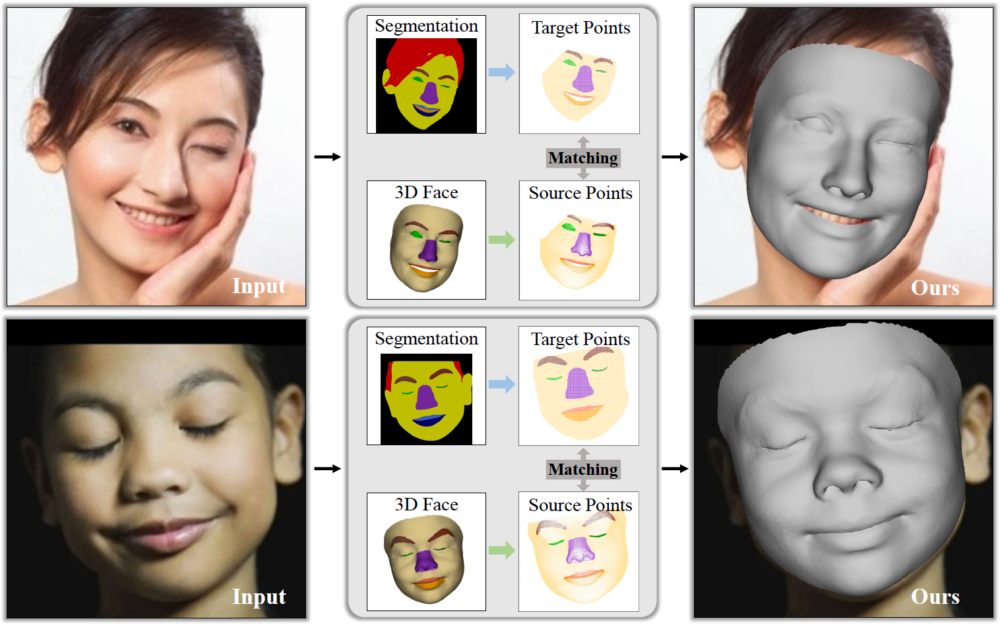
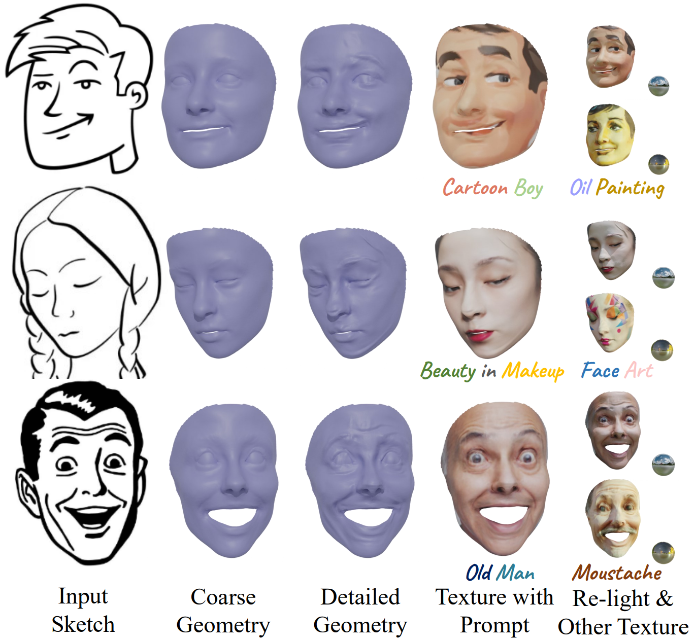
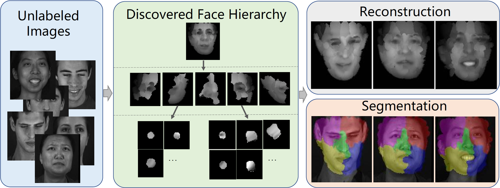
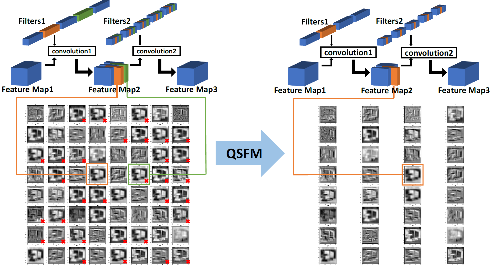

|
Zidu Wang I am a Master student at Institute of Automation, Chinese Academy of Sciences, advised by Prof. Xiangyu Zhu. I also work closely with Prof. Zhen Lei. Previously, I received my Bachelor's degree from University of Science and Technology Beijing in 2022, work closely with Prof. Rui Wang. My current research interests focus on 3D face or head reconstruction, differentiable rendering for shape deformation and non-rigid deformation. 📣 I am looking for PhD opportunities starting in the fall of 2025. If you know of any available positions or have any suggestions, I would greatly appreciate it. |

|
Publications |
|  |
3D Face Reconstruction with the Geometric Guidance of Facial Part Segmentation
Zidu Wang, Xiangyu Zhu, Tianshuo Zhang, Baiqin Wang, Zhen Lei Conference on Computer Vision and Pattern Recognition (CVPR), 2024 (Highlight) code / arXiv Provide a 3D face reconstruction framework proficient in reconstructing extreme expressions and a novel loss that comprehensively utilizes segmentation information for face reconstruction. Discuss some drawbacks of differentiable renderers for shape deformation. |
|  |
S2TD-Face: Reconstruct a Detailed 3D Face with Controllable Texture from a Single Sketch
Zidu Wang, Xiangyu Zhu, Jiang Yu, Tianshuo Zhang, Zhen Lei ACM International Conference on Multimedia (ACM MM), 2024 code / arXiv An interesting work focused on detailed 3D face reconstruction from sketches, with controllable texture based on text prompts, along with a dedicated sketch to geometry loss function to capture the fine strokes of the input sketch. |
|  |
HP-Capsule: Unsupervised Face Part Discovery by Hierarchical Parsing Capsule Network
Chang Yu, Xiangyu Zhu, Xiaomei Zhang, Zidu Wang, Zhaoxiang Zhang, Zhen Lei Conference on Computer Vision and Pattern Recognition (CVPR), 2022 arXiv Discuss how the neural networks understand homologous objects without human intervention. |
|  |
QSFM: Model Pruning Based on Quantified Similarity Between Feature Maps for AI on Edge
Zidu Wang, Xuexin Liu, Long Huang, Yunqing Chen, Yufei Zhang, Zhikang Lin, Rui Wang IEEE Internet of Things Journal (IoTJ), 2022 arXiv Provide a novel method for identifying redundancy in 3D tensors and guiding model compression. Completed during my undergraduate studies. |
Selected Awards |
|
Awarded annually to only around 10 undergraduate graduates from the entire USTB.
The highest level of USTB undergraduate scholarship. |
Professional Services |
|
Reviewer for CVPR 2024, CVPR 2023, ACM MM 2024, ACM MM 2022, IJCB 2024, IJCB 2023, Pattern Recognition (PR). |
|
template adapted from this awesome website |